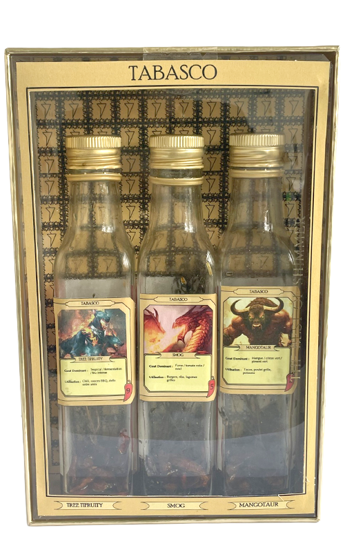
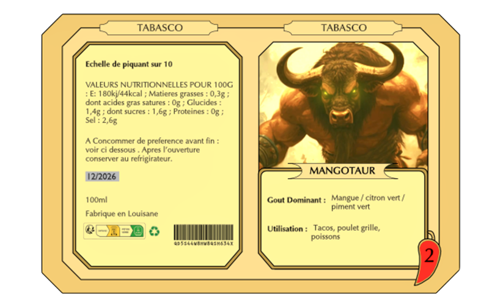
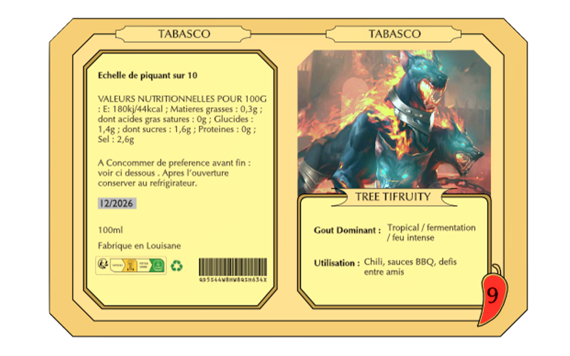
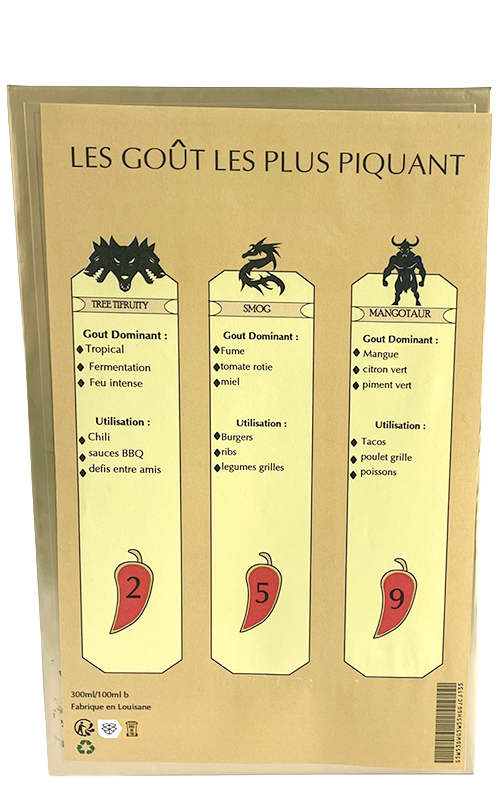
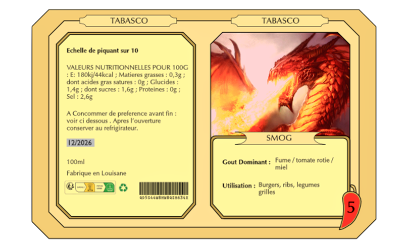

«On fait monter la sauce» est un projet de branding pour la marque Tabasco. L'objectifs de ce projet était de créer des étiquettes pour un pack de trois sauces; Ces étiquettes devaient montrer que ces sauces ont des goûts originaux et uniques dans leurs genres.
Le pack final que j'ai proposé avez une dimension de défi en utilisant des design de carte de jeux pour les étiquettes. Les étiquettes avaient des monstres fantastique dessus pour répondre aux valeurs que voulaient retranscrire la marque pour cette collection.




